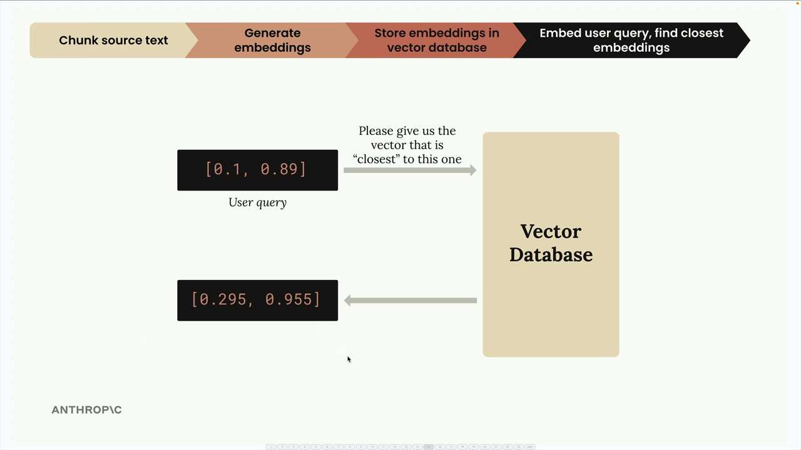
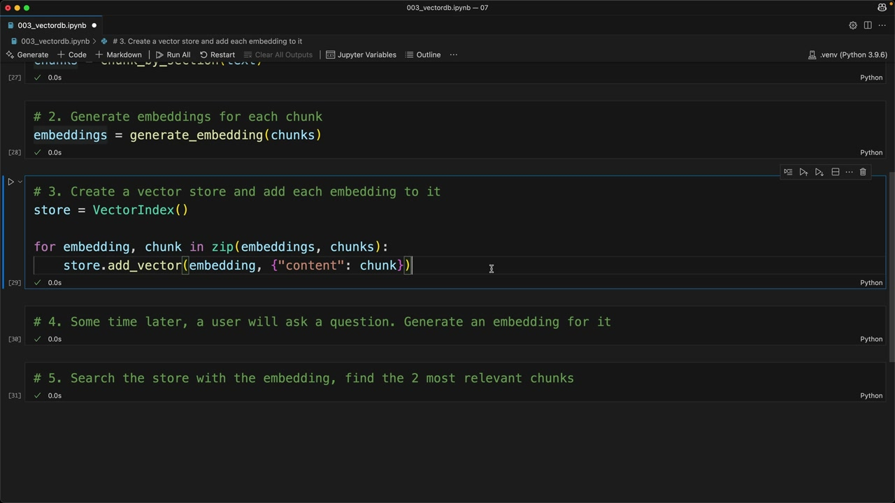

RAG 흐름 구현하기
RAG 흐름을 개념적으로 이해했으니, 이제 단계별로 구현해 보겠습니다. 텍스트를 청크로 나누고, 임베딩을 생성하고, 벡터 데이터베이스에 저장하고, 유사도 검색을 수행하는 전체 예제를 살펴봅니다.
5단계 RAG 구현
이 구현은 앞서 설명한 동일한 5단계를 따릅니다:
- 섹션별로 텍스트 청크 분할
- 각 청크에 대한 임베딩 생성
- 벡터 저장소 생성 및 각 임베딩 추가
- 사용자 질문에 대한 임베딩 생성
- 저장소에서 가장 관련성 높은 청크 검색

이 다이어그램은 사용자 쿼리를 임베딩으로 변환하고 벡터 데이터베이스를 검색하여 가장 관련성 높은 콘텐츠를 찾는 과정을 보여줍니다.
1단계: 텍스트 청크 분할
먼저 문서를 불러와 관리 가능한 섹션으로 분할합니다:
with open("./report.md", "r") as f:
text = f.read()
chunks = chunk_by_section(text)
chunks[2] # Test to see the table of contents
앞서 사용한 chunk_by_section 함수를 그대로 사용하여 문서를 논리적인 섹션으로 분할합니다.
2단계: 임베딩 생성
다음으로, 모든 청크에 대한 임베딩을 한 번에 생성합니다:
embeddings = generate_embedding(chunks)임베딩 함수는 단일 문자열과 문자열 목록 모두를 처리할 수 있도록 업데이트되어 배치 처리에 더욱 효율적입니다.
3단계: 벡터 데이터베이스에 저장
이제 벡터 저장소를 생성하고 임베딩과 관련 텍스트를 채워 넣습니다:
store = VectorIndex()
for embedding, chunk in zip(embeddings, chunks):
store.add_vector(embedding, {"content": chunk})임베딩과 원본 텍스트 콘텐츠를 함께 저장한다는 점에 주목하세요. 나중에 검색할 때 숫자 임베딩 값만이 아닌 실제 텍스트를 반환해야 하기 때문에 이것이 매우 중요합니다.
원본 텍스트를 저장하는 이유는?
벡터 데이터베이스를 쿼리할 때 임베딩 숫자만 돌려받는 것은 유용하지 않습니다. 해당 임베딩을 생성하는 데 사용된 실제 텍스트가 필요합니다. 그렇기 때문에 데이터베이스의 각 임베딩 옆에 원본 청크 텍스트(또는 최소한 그에 대한 참조)를 함께 저장합니다.
4단계: 사용자 쿼리 처리
사용자가 질문을 하면 해당 쿼리에 대한 임베딩을 생성합니다:
user_embedding = generate_embedding("What did the software engineering dept do last year?")5단계: 관련 콘텐츠 검색
마지막으로, 벡터 저장소에서 가장 유사한 청크를 검색합니다:
results = store.search(user_embedding, 2)
for doc, distance in results:
print(distance, "\n", doc["content"][0:200], "\n")이 검색은 유사도 점수(코사인 거리)와 함께 가장 관련성 높은 두 청크를 반환합니다.

검색 결과는 유사도 점수와 함께 문서에서 사용자 질문과 가장 관련성 높은 섹션을 보여줍니다.
결과 이해하기
소프트웨어 엔지니어링 부서에 관한 예시 쿼리를 실행하면 다음과 같은 결과가 반환됩니다:
- 섹션 2: 소프트웨어 엔지니어링 - 거리 0.71 (가장 유사)
- 방법론 섹션 - 거리 0.72 (두 번째로 유사)
거리 값이 낮을수록 유사도가 높으므로, 섹션 2가 쿼리와 가장 관련성이 높습니다.
다음은?
이 구현은 기본적인 경우에 잘 작동하지만, 예상대로 작동하지 않는 시나리오도 있습니다. 다음 섹션에서는 RAG 시스템을 더 견고하고 정확하게 만들기 위한 개선 방법을 살펴봅니다.
핵심은 RAG가 근본적으로 텍스트를 숫자(임베딩)로 변환하고, 그 숫자를 효율적으로 저장한 뒤, 사용자가 질문할 때 수학적 유사도를 사용하여 관련 콘텐츠를 찾는 것이라는 점입니다.